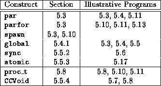

![[DBPP]](pictures//asm_color_tiny.gif)


![[Search]](pictures//search_motif.gif)
In this chapter, we have learned about a programming language, CC++ , that provides a small set of extensions to C++ for specifying concurrency, locality, communication, and mapping. CC++ does not support the task and channel abstractions of Part I directly, but its constructs can be used to build libraries that provide these abstractions. In keeping with the design methodology of Chapter 2, CC++ allows mapping decisions to be changed independently of other aspects of a design. The performance modeling techniques of Chapter 3 and the modular design techniques of Chapter 4 also apply directly. Table 5.1 summarizes the language constructs that have been introduced.
The CC++ programs presented in this chapter tend to be more verbose than the equivalent Fortran M, High Performance Fortran, or Message Passing Interface programs to be presented in the chapters that follow. To a greater extent than these other systems, CC++ provides basic mechanisms that can be used to implement a variety of different parallel program structures. For example, we must implement a channel library in order to use channels in a CC++ program, and a processor object array library to create arrays of processor objects. Once these libraries have been written, however, they can be reused in many situations. This reuse is facilitated by the object-oriented features of C++ .

Table 5.1: CC++
quick reference: the constructs described in this
chapter, the section in which they are described, and programs that
illustrate their use.
© Copyright 1995 by Ian Foster